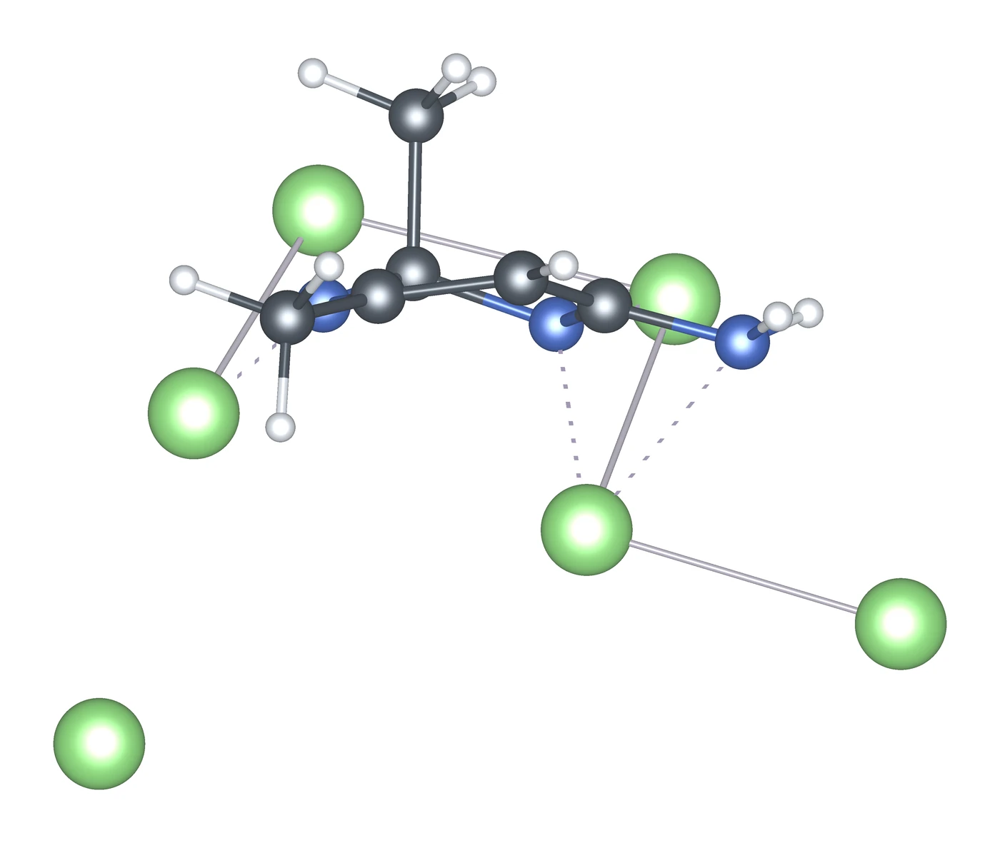
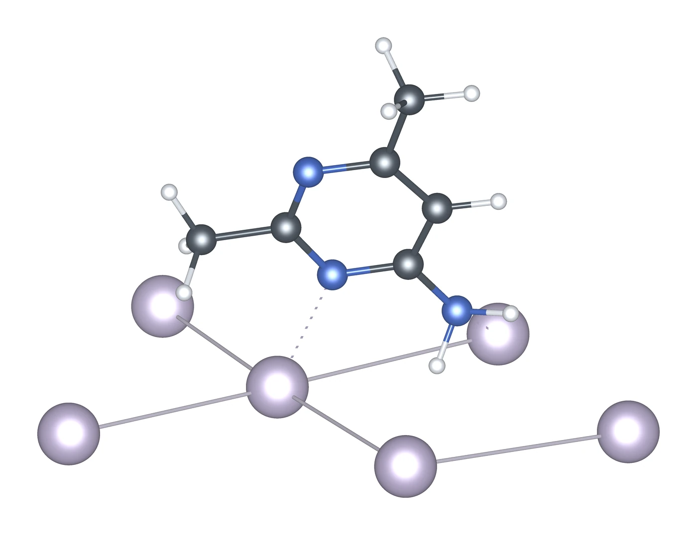
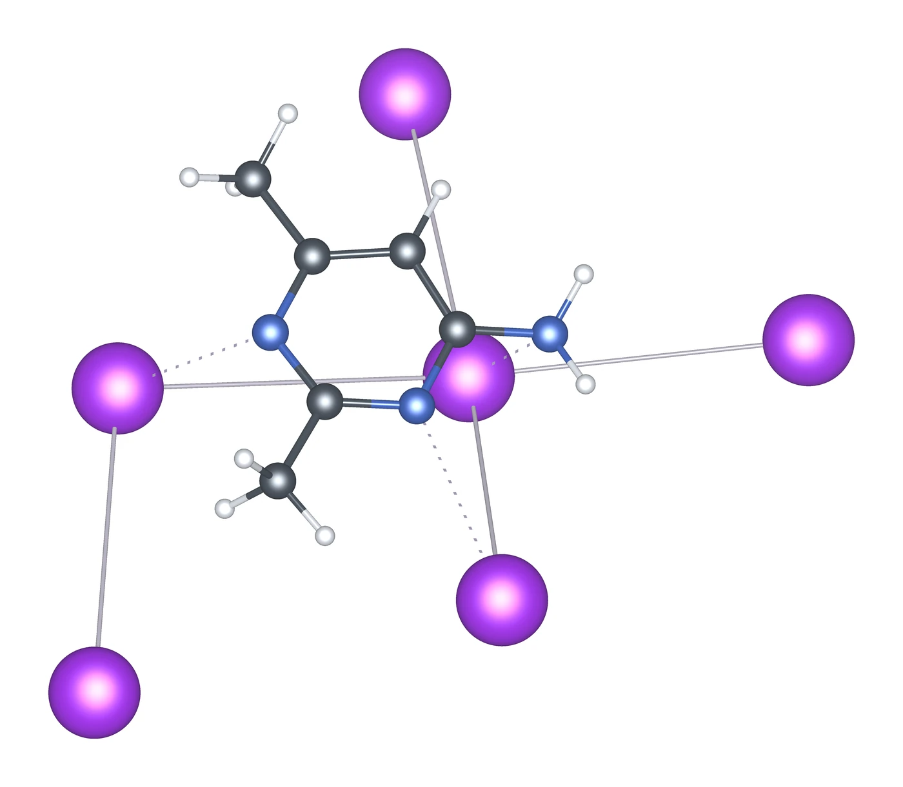
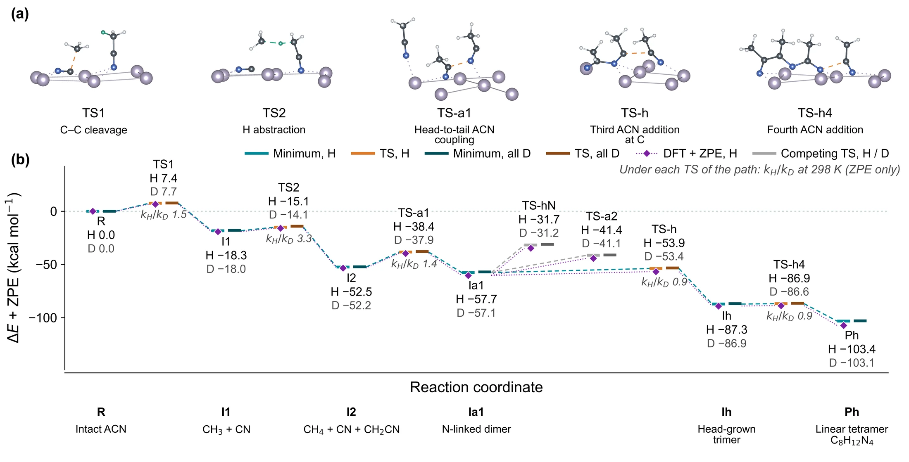

Alkali-metal surfaces
Acetonitrile on lithium, sodium and potassium
Experiments on sodium point to pyrimidine rings as the product, yet acetonitrile on an alkali metal can also cleave, form C–C chains or close other rings. We followed a film of acetonitrile on Li, Na and K(100) along each of these routes, with every state reached from the one before it and every drawn barrier checked with DFT.
Each metal carries two layers of acetonitrile on its (100) surface. Paths and energies come from the UMA potential, and each route is one continuous path in one film, so that every step starts from the product of the step before. For each drawn step, DFT single points at the saddle and its reactant give the barrier, and these barriers differ from UMA by 1.4–1.9 kcal/mol on average.
The hardest step of each route differs considerably among the three metals. Sodium reaches methane, the chain, the triazine and the aminopyrimidine by both routes, and up to the amide intermediate its hardest step on the CH2CN route is only 12.3 kcal/mol. The final hydrogen transfer that turns the amide into the aminopyrimidine costs 22.2 kcal/mol and is uphill, so the amide is the resting state. Potassium cleaves the C–CN bond and grows chains most easily, whereas lithium needs the largest steps, 26.6 kcal/mol for the chain and 33.7 kcal/mol for the aminopyrimidine.
Barriers are DFT single points at the UMA geometries. Hover a dot for the UMA value and the product energy, or click it to open that product in 3D. Each metal's tab draws every route in full.



4-Amino-2,6-dimethylpyrimidine, the product seen in experiment, bound to each surface (VESTA, top metal layer only).
Kinetic isotope effects
Replacing every hydrogen with deuterium changes the rate of a step mainly through the zero-point energy. We computed this effect from UMA Hessians at the saddle and the reactant of each step. Steps that move hydrogen show normal isotope effects, about 4 at room temperature for the last hydrogen transfer to the aminopyrimidine and about 9 for hydrogen moving from carbon to the metal. Bond formation without hydrogen transfer mostly gives small inverse effects.
The hardest steps of most routes move no hydrogen, so the overall rates change little with deuterium, and the energetic spans of the routes give kH/kD of only 0.5–1.4 at 298 K. The final hydrogen transfer to the aminopyrimidine therefore provides the clearest isotope signature, with kH/kD of 3.9–4.5 at 298 K and 8–10 at 193 K on all three metals. C–CN cleavage shows a secondary effect of 1.2–1.8 at 298 K. Deuterated molecular dynamics with classical nuclei shows no H/D difference beyond the scatter between replicas, as expected without zero-point energy.
ZPE-only kH/kD = exp[(ΔE‡D − ΔE‡H)/RT] from UMA Hessians of 85 steps of the one-layer profiles. The lithium step from carbon to the metal starts from a different reactant and is omitted. Click a dot to open its saddle in 3D.

Sodium, linear-tetramer route with zero-point energy for H and D. (a) Transition states of the main steps. (b) Energies with ZPE for H (light) and D (dark), DFT + ZPE points, and kH/kD at 298 K under each step.